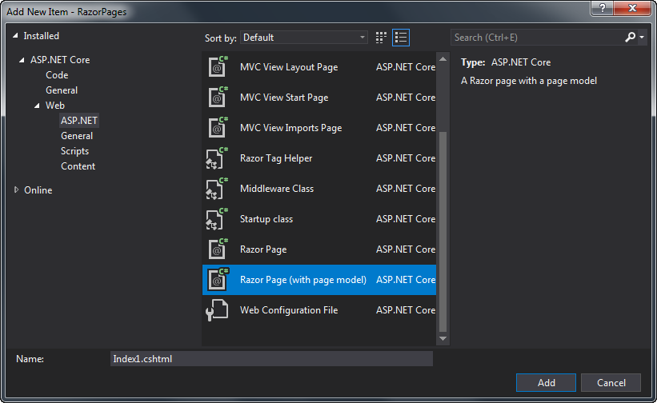

The main purpose of the Razor Pages PageModel class is to provide clear separation between the UI layer (the .cshtml view file) and processing logic for the page. There are a number of reasons why this separation is beneficial:
- It reduces the complexity of the UI layer making it easier to maintain.
- It facilitates automated unit testing.
- It enables greater flexibility for teams in that one member can work on the view while another can work on the processing logic.
- It encourages smaller, reusable units of code for specific purposes, which aids maintenance and scalability (i.e. the ease with which the application's code base can be added to in order to cater for additional future requirements).
PageModel classes are created when you choose the Razor Page (with page model) option when adding a new item:

The PageModel class is declared in a separate class file - a file with a .cs extension. PageModel classes are placed in the same namespace as the page, which by default follows the pattern <default namespace>.<root folder name> and are named after the page file, with "PageModel" as a suffix. A PageModel class for About.cshtml will be named AboutPageModel and will be generated in a file named About.cshtml.cs.
In terms of its features and functionality, the PageModel class is a combination of a Controller and a ViewModel.
Controllers
Controllers feature in a number of design and architectural patterns concerned with the presentation layer of an application. They are found in the Model-View-Controller (MVC) pattern, Front Controller, Application Controller and Page Controller patterns. A Razor Page is an implementation of the Page Controller pattern.
The Page Controller pattern is characterised by the fact that there is a one-to-one mapping between pages and their controllers. The role of the controller in the Page Controller pattern is to accept input from the page request, to ensure that any requested operations on the model (data) are applied, and then to determine the correct view to use for the resulting page.
ViewModels
A ViewModel is an implementation of the Presentation Model design pattern. It is a self-contained class that represents the data and behaviour of a specific "view" or page. The ViewModel pattern is used extensively in MVC application development, where it mainly represents data, but typically little behaviour. In Razor Pages, the PageModel is also the ViewModel. For this reason, Razor Pages is often described as implementing the MVVM (Model, View ViewModel) pattern.
Default Template
The following code shows the content that is generated for each file when you use the Razor Page (with page model) option to add a new page to a Razor Pages application:
(Index.cshtml)
@page
@model IndexModel
@{
}
(Index.cshtml.cs)
using System;
using System.Collections.Generic;
using System.Linq;
using System.Threading.Tasks;
using Microsoft.AspNetCore.Mvc;
using Microsoft.AspNetCore.Mvc.RazorPages;
namespace LearnRazorPages.Pages
{
public class IndexModel : PageModel
{
public void OnGet()
{
}
}
}
The PageModel class is made available to the view file via the @model directive. The generated PageModel class inherits from Microsoft.AspNetCore.Mvc.RazorPages.PageModel, which has a number of properties that enable you to work with various items associated with the HTTP request such as the HttpContext, Request, Response, ViewData, ModelState and TempData. It also includes a range of methods that enable you to specify the type of the resulting response, including another Razor Page, a file, some JSON, a string or a redirection to another resource.
Request Processing
Request processing in a PageModel is performed within handler methods which are analogous to Action methods on an ASP.NET MVC controller. By convention, handler method selection is based on matching the HTTP verb that was used for the request with the name of the handler method using the pattern On<verb> with Async appended optionally to denote that the method is intended to run asynchronously. The OnGet or OnGetAsync method is selected for GET requests and the OnPost or OnPostAsync method is selected for POST requests. If you want to create a fully REST-ful application, all other HTTP verbs (PUT, DELETE etc) are also supported.
The matching algorithm only looks at the name of the method. Neither the return type nor any parameters are taken into consideration. The only other stipulation for a handler method is that it must be public.
Named handler methods allow you to specify a number of alternative methods for a specific verb. You might want to use these if your page contains multiple forms, each requiring a different process to be executed.
Properties and Methods
The properties and methods that you apply to the PageModel class are available on the Model property in the Razor Page. The properties can be simple ones like string, int, DateTime etc, or they can be complex classes, or a combination. If your page is designed for adding new products to a database, you might have the following range of properties:
public string Name { get ; set; }
public SelectList Categories { get; set; }
public int CategoryId { get; set; }
You can also add properties or methods to the PageModel that take care of formatting values for display, to minimise the amount of code you add to the Razor Page. The following example shows how you can use a property to format the result of a calculation:
public List<OrderItems> Orders { get; set; }
public string TotalRevenue => Orders.Sum(o => o.NetPrice).ToString("f");
Then your Razor Page will only need @Model.TotalRevenue to display the total of all sales to two decimal places, negating the need for LINQ calculations in the HTML.
The properties that you add to the PageModel also enable you to develop a form in a strongly typed manner, which reduces the potential for runtime errors. They are available to the for attribute of the Label and Input taghelpers, for example.